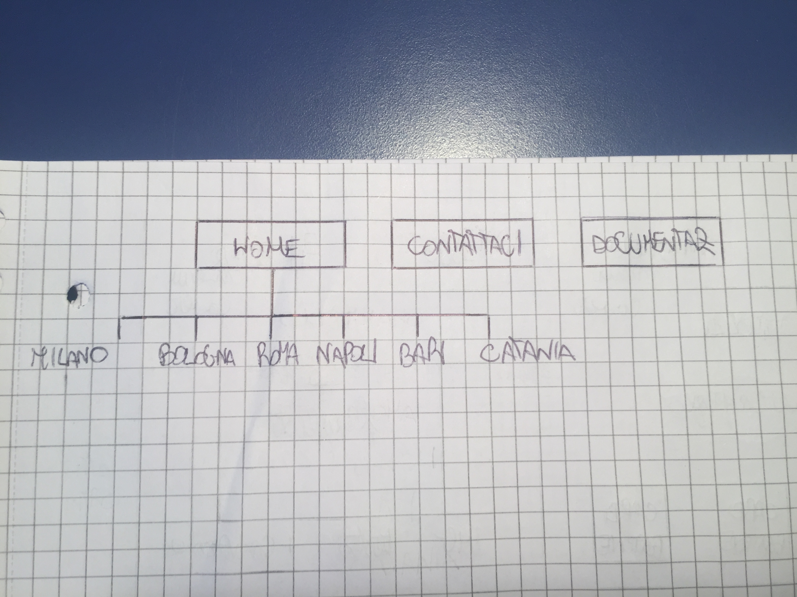
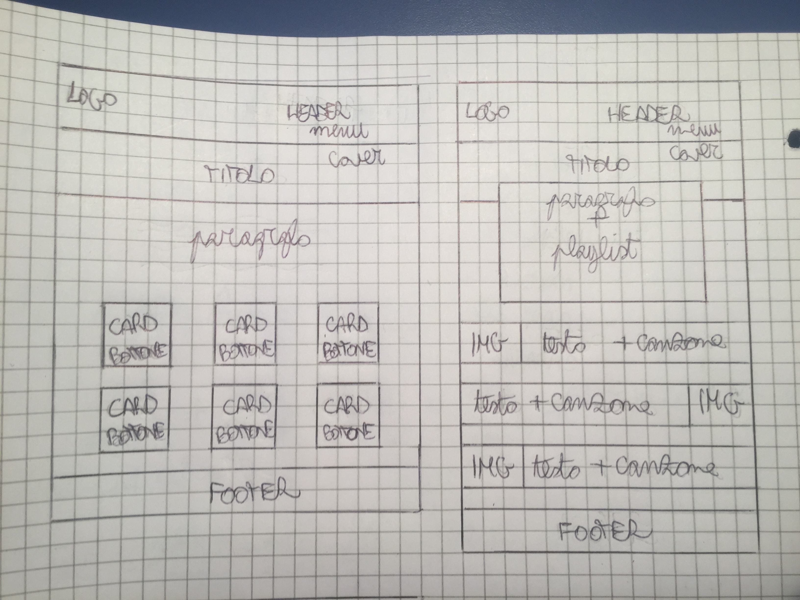
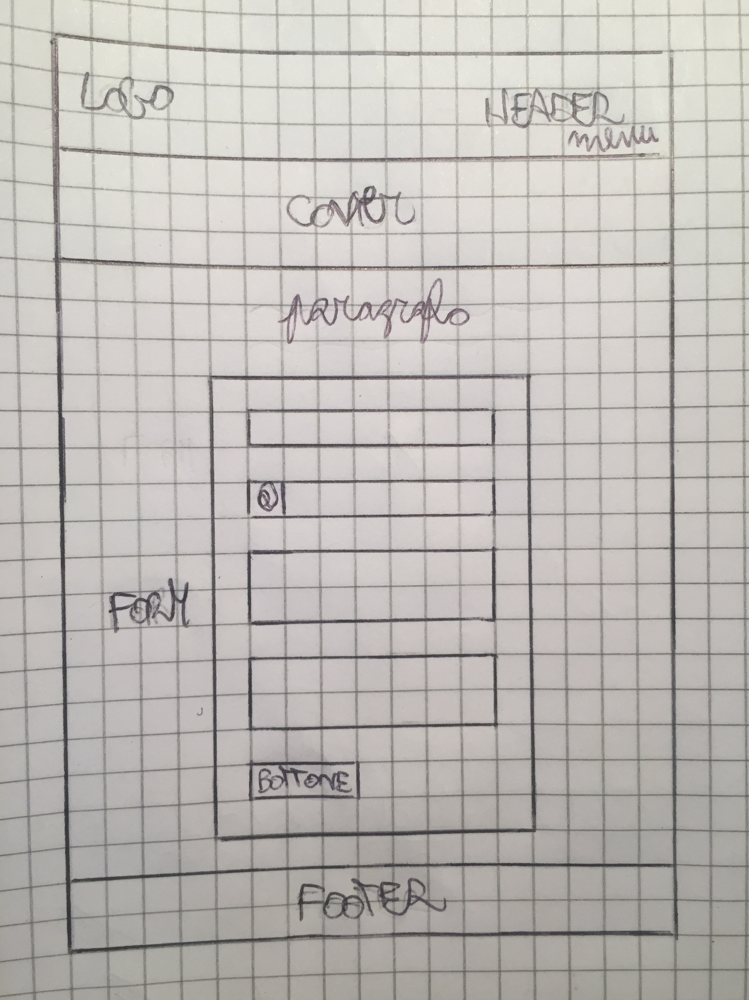
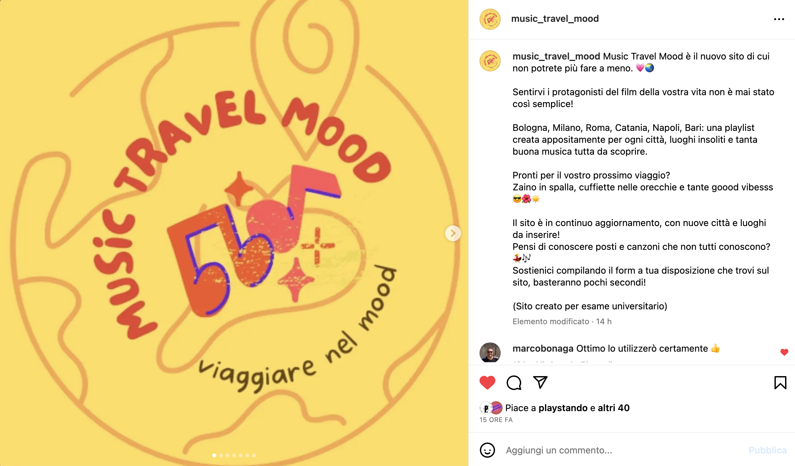
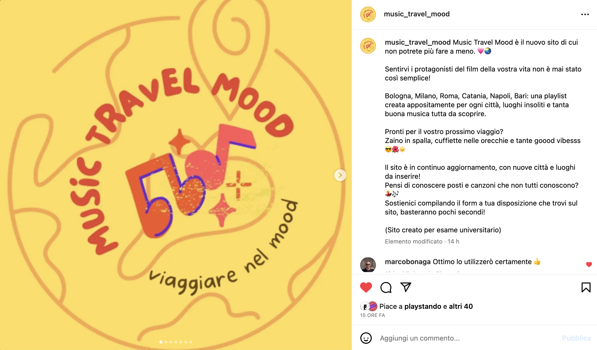

Project Management Plan
1. Benchmarking
Il progetto Music Travel Mood vuole unire il tema dei viaggi a quello della musica, basandosi sulle sensazioni positive che molti luoghi possono suscitare. Il sito vuole consigliare nuove canzoni e nuovi posti da visitare associando le città e i luoghi descritti a playlist e brani che abbiano la funzione di colonna sonora per i viaggi.
Target utente primario
Ragazzi/e under 30
Appassionati di musica
Appassionati di viaggi
Coloro che desiderano approfondire la loro conoscenza riguardo nuovi posti e nuova musica.
Competitors
spotify: primo sito per lo streaming musicale che permette di scoprire nuovi artisti, canzoni e generi in base alle preferenze espresse con gli ascolti; ha una selezione di playlist tematiche solo per alcuni luoghi;
canzoneitaliana.it: è un archivio della musica tradizionale italiana, che propone una divisione in base agli anni e alle regioni ma non indica collegamenti o consigli per visitare i luoghi citati;
tripadvisor: consiglia posti e locali grazie a sistemi di votazione e recensione, non ha collegamenti con la musica e non offre curiosità o aneddoti sui luoghi, ma ha un engagement alto dovuto alle interazioni degli utenti;
turistipercaso: offre consigli per viaggiare, ha pubblicato un articolo riguardante alcuni posti insoliti senza focalizzarsi sull’Italia o collegamenti con la musica.
2. Struttura e layout
Architettura del sito

Wireframe


Look and feel:
· Font: Lilita One(Regular 400) i titoli; Aleo(Regular 400, Regular 400 Italic, Bold 700) per i testi;
· Palette colori: rgb(250,250,210) per lo sfondo; ##FAC401, #DD6624 per i titoli; #FF6B6E per i titoli dei banner e per il footer; rgb(173,216,230) per lo sfondo dei bottoni, #3AE0E0 per il bordo dei bottoni; #44A9CC sfondo dei bottoni quando si va sopra con il mouse; #000 per i testi; #DD6624 per il background del menu di navigazione; #fff per i nomi delle pagine nel menu di navigazione, per il background dei banner e dell’introduzione nelle pagine; #000 per il filtro della cover; #EB563A per il titolo della cover; #1af3a4 per il link di Spotify e Instagram quando passi sopra l’icona;
· Elementi della pagina: logo, menu di navigazione, cover con filtro, card di Bootstrap con bottone, banner con testo e foto, sezione commenti con bottone presi da Bootstrap, footer
3. Linguaggi e strumenti
Linguaggi web utilizzati:
HTML5
CSS3
Strumenti tecnologici a supporto della progettazione web:
Visual Studio Code come text editor
Bootstrap per la grafica
Github per la pubblicazione
Fontawesome per l’icona di Spotify e Instagram(+link ai profili)
Canva per la grafica del logo e della copertina della homepage e della pagina “Contattaci”
Favicon per l’icona del sito visualizzabile sul browser
Google Fonts per le font
Unsplash, Pixabay, Pexels, Wikimedia commons, Pinterest per le immagini (+link in style.css)
Adobe Color per i colori
Spotify per la creazione delle playlist e i link alle canzoni
 
